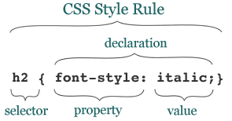

por Jane Doe
Se existe alguma coisa que caracteriza o que deu errado com a Web, é a proliferação da apresentação em detrimento da estrutura e conteúdo. ... Nós todos nos orgulhamos de nosso trabalho e queremos olhá-lo tão bom quanto pensamos que é. Já que a HTML nos deu muito pouco em termos de habilidades de apresentação interessantes, nós a forçamos para canais que queríamos viajar. Se tivéssemos bom estilo para começar, a corrupção dos fundamentos da Web não teria sido necessária.
Por isso a CSS é tão importante. Finalmente, não temos somente a habilidade de descrever apresentações sofisticadas, podemos fazê-la em relação a documentos bem estruturados e despojados. Chega de tortura de marcação! Somente elementos "limpos" que são exibidos atraentemente por meio da CSS.
No desenvolvimento Web, as folhas de estilo em cascata (CSS) é uma linguagem de estilo usada para descrever a apresentação de um documento escrito em linguagem de marcação. Sua aplicação mais comum é estilizar páginas da Web escritas em HTML e XHTML.
